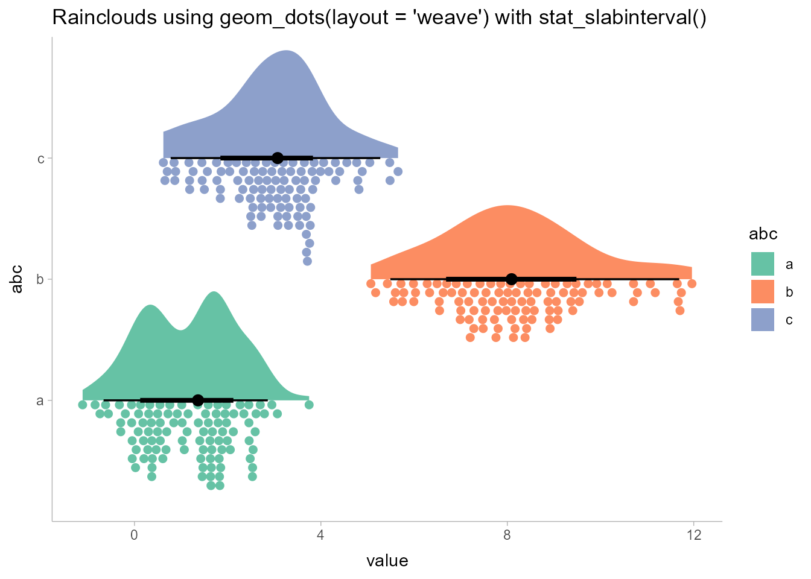

ggdist is an R package that provides a flexible set of ggplot2 geoms and stats designed especially for visualizing distributions and uncertainty. It is designed for both frequentist and Bayesian uncertainty visualization, taking the view that uncertainty visualization can be unified through the perspective of distribution visualization: for frequentist models, one visualizes confidence distributions or bootstrap distributions (see vignette("freq-uncertainty-vis")); for Bayesian models, one visualizes probability distributions (see the tidybayes package, which builds on top of ggdist).
The geom_slabinterval() / stat_slabinterval() family (see vignette("slabinterval")) makes it easy to visualize point summaries and intervals, eye plots, half-eye plots, ridge plots, CCDF bar plots, gradient plots, histograms, and more:

The geom_dotsinterval() / stat_dotsinterval() family (see vignette("dotsinterval")) makes it easy to visualize dot+interval plots, Wilkinson dotplots, beeswarm plots, and quantile dotplots (and combined with half-eyes, composite plots like rain cloud plots):

The geom_lineribbon() / stat_lineribbon() family (see vignette("lineribbon")) makes it easy to visualize fit lines with an arbitrary number of uncertainty bands:

All stats in ggdist also support visualizing analytical distributions and vectorized distribution data types like distributional objects or posterior::rvar() objects. This is particularly useful when visualizing uncertainty in frequentist models (see vignette("freq-uncertainty-vis")) or when visualizing priors in a Bayesian analysis.
The ggdist geoms and stats also form a core part of the tidybayes package (in fact, they originally were part of tidybayes). For examples of the use of ggdist geoms and stats for visualizing uncertainty in Bayesian models, see the vignettes in tidybayes, such as vignette("tidybayes", package = "tidybayes") or vignette("tidy-brms", package = "tidybayes").

Installation
You can install the currently-released version from CRAN with this R command:
install.packages("ggdist")Alternatively, you can install the latest development version from GitHub with these R commands:
install.packages("devtools")
devtools::install_github("mjskay/ggdist")Dependencies
ggdist aims to have minimal additional dependencies beyond those already required by ggplot2. The ggdist dependencies fall into the following categories:
Packages that ggplot2 also depends on. These packages add no additional dependency cost because ggplot2 already requires them: rlang, cli, scales, tibble, vctrs, withr, gtable, and glue.
-
Packages that ggplot2 does not depend on. These are all well-maintained packages with few dependencies and a clear need within ggdist:
- distributional: this implementation of distribution vectors powers much of ggdist. This package adds minimal additional cost, as its only dependency that is not also a dependency of ggplot2 is numDeriv, which is needed by ggdist anyway (see below).
-
numDeriv: used for calculating Jacobians of scale transformations. Needed because testing has revealed common situations where
stats::numericDeriv()fails but numDeriv does not. Widely used by other CRAN packages and has no additional dependencies. -
{quadprog}: Used to solve constrained optimization problems during different parts of dotplot layout, particularly to avoid dot overlaps in the"bin"and"weave"layouts. Widely used by other CRAN packages and has no additional dependencies. - Rcpp: Used to implement faster dotplot layout. Widely used by other CRAN packages and has no additional dependencies.
Feedback, issues, and contributions
I welcome feedback, suggestions, issues, and contributions! If you have found a bug, please file it here with minimal code to reproduce the issue. Pull requests should be filed against the dev branch. I am not particularly reliable over email, though you can try to contact me at mjskay@northwestern.edu. A Bluesky message is more likely to elicit a response.
Citing ggdist
Matthew Kay (2024). ggdist: Visualizations of Distributions and Uncertainty in the Grammar of Graphics. IEEE Transactions on Visualization and Computer Graphics, 30(1), 414–424. DOI: 10.1109/TVCG.2023.3327195.
Matthew Kay (2025). ggdist: Visualizations of Distributions and Uncertainty. R package version 3.3.3, https://mjskay.github.io/ggdist/. DOI: 10.5281/zenodo.3879620.